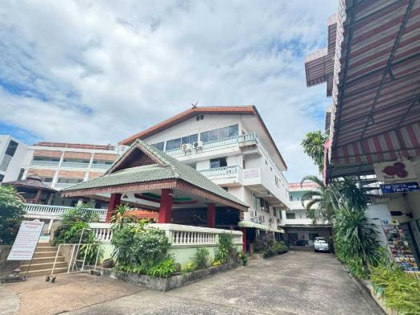

ที่พักรอบถนนคนเดินท่าแพ
เนื่องจากถนนคนเดินท่าแพอยู่ใจกลางเขตเมืองเก่า ที่พักโดยรอบจึงมีให้เลือกหลากหลายตั้งแต่โฮสเทลราคาประหยัดไปจนถึงโรงแรมบูทีคสไตล์ล้านนา ส่วนใหญ่สามารถเดินเท้าไปถึงถนนคนเดินได้ภายในเวลาไม่กี่นาที เหมาะสำหรับผู้ที่อยากเดินเล่นตลาดแล้วกลับที่พักได้ทันที

🖼️รูปโรงแรมในเขตเมืองเก่าเชียงใหม่
บูทีคล้านนา
โรงแรมบูทีคในเขตเมืองเก่า
โรงแรมตกแต่งสไตล์ล้านนาผสมโมเดิร์น ตั้งอยู่ในซอยเงียบสงบใกล้ประตูท่าแพ เดินทางสะดวกทั้งไปถนนคนเดินและวัดสำคัญในเมืองเก่า
ประหยัด
โฮสเทลใกล้ประตูท่าแพ
โฮสเทลราคาเข้าถึงได้ บรรยากาศเป็นกันเอง เหมาะสำหรับนักท่องเที่ยวงบประมาณจำกัดหรือเดินทางคนเดียว อยู่ใกล้จุดเริ่มต้นถนนคนเดิน
หรู ริมคูเมือง
โรงแรมริมคูเมืองเชียงใหม่
โรงแรมหรูพร้อมวิวคูเมืองโบราณ บรรยากาศเงียบสงบกว่าในเขตตลาด เหมาะสำหรับผู้ที่ต้องการพักผ่อนแบบเต็มที่หลังเดินเที่ยวตลาด